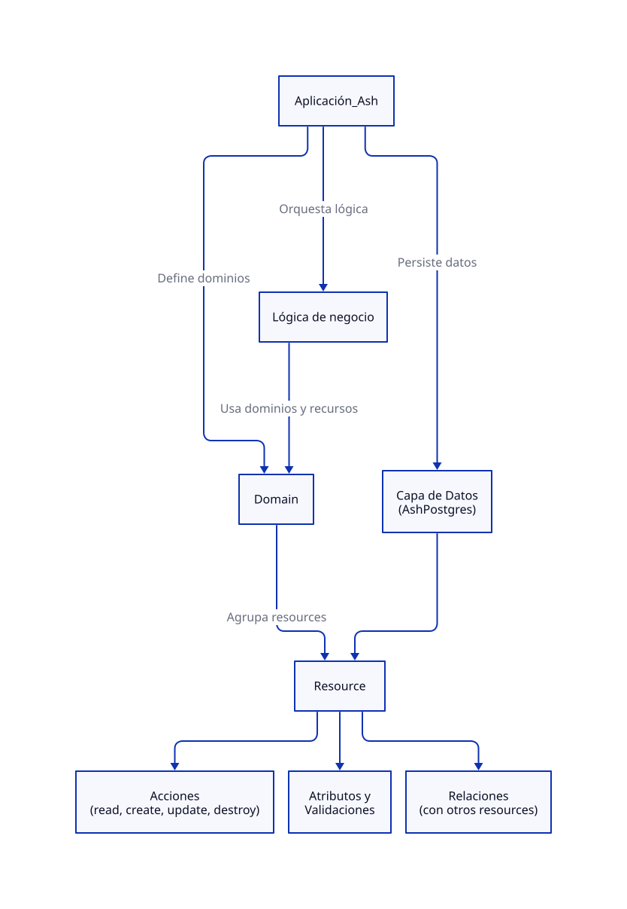

Ash: Stoic API
Ash es un framework que simplifica el proceso de modelar la lógica de dominio. Con Ash defines los Recursos que quieres utilizar y luego el framework se encarga de generar todo lo necesario (migraciones, contratos de API, etc.). Está diseñado pensando en la construcción de aplicaciones web, APIs y servicios, pero se puede utilizar para cualquier tipo de aplicación Elixir.
Entre las ventajas de esta abstracción unificada está la facilidad de extender las funcionalidades de la aplicación. Se pueden agregar cosas como autorización, panel de admin o encriptación, escribiendo solo un par de líneas en la definición de un Recurso.
En este capítulo, usaremos Ash para extender Stoic API con una API GraphQL.
Paso 1: Instalación y creación de un nuevo proyecto
Primero necesitamos las herramientas e instalaciones básicas:
# instalar phx_new para Phoenix e Igniter
mix archive.install hex phx_new
mix archive.install hex igniter_new
# crear una aplicación nueva con Ash
mix igniter.new stoic_quotes \
--install ash,ash_phoenix \
--with phx.new \
&& cd stoic_quotes
# instalar ash_graphql y ash_postgres
mix igniter.install ash_graphql
mix igniter.install ash_postgresPaso 2: Definición de Dominio y Recursos
Ash viene con su propio DSL (Domain-Specific Language). Esto significa que el lenguaje usado para definir Recursos es diferente a Elixir. Es principalmente declarativo, a diferencia de Ecto, que tiene un enfoque más imperativo para la definición de schemas y migraciones.
La abstracción más importante en Ash son las Acciones — las cosas que puedes hacer en tu dominio, como :create_user, :publish_post, :approve_order o :calculate_shipping. Estas acciones se organizan en Recursos, que se agrupan dentro de Dominios. A partir de esas Acciones, extensiones como AshGraphql pueden generar mutaciones de GraphQL, y AshJsonApi puede crear endpoints REST, todo sin configuración adicional.

Generadores
Usaremos generadores, tareas Mix que crean la base de los archivos:
mix ash.gen.resource StoicQuotes.Quote \
--integer-primary-key id \
--default-actions create,read,update,destroy \
--attribute quote:string:required \
--attribute author:string:required \
--attribute source:string:required \
--extend postgres,graphqlEsto genera el siguiente archivo:
defmodule StoicQuotes.Quote do
use Ash.Resource,
otp_app: :stoic_quotes,
domain: StoicQuotes,
extensions: [AshGraphql.Resource],
data_layer: AshPostgres.DataLayer
postgres do
table "quotes"
repo StoicQuotes.Repo
end
graphql do
type :quote
end
actions do
defaults [:read, :destroy, create: [], update: []]
end
attributes do
integer_primary_key :id
attribute :quote, :string do
allow_nil? false
end
attribute :author, :string do
allow_nil? false
end
attribute :source, :string do
allow_nil? false
end
end
enddefmodule StoicQuotes.Ash do
use Ash.Domain, otp_app: :stoic_quotes, extensions: [AshGraphql.Domain]
resources do
resource StoicQuotes.Ash.Quote
end
endModificar recurso generado
Luego, realizamos las siguientes modifiaciones.
Agregar identidad única al Recurso:
identities do
identity :unique_quote, [:quote]
endCorrer codegen para actualizar migraciones:
mix ash.codegen add_unique_quote_identityCorrer migraciones:
mix ecto.setup && mix ecto.migrateCambiar Acciones por defecto para que acepten todos los argumentos:
actions do
defaults [:read, :destroy, create: :*, update: :*]
endCambiar atributos a públicos para que se puedan acceder a través de APIs:
attributes do
integer_primary_key :id
attribute :quote, :string do
allow_nil? false
public? true
end
attribute :author, :string do
allow_nil? false
public? true
end
attribute :source, :string do
allow_nil? false
public? true
end
endCrear Acción :random
defmodule StoicQuotes.Ash.Quote do
require Ash.Sort
...
actions do
defaults [:read, :destroy, create: :*, update: :*]
read :random do
prepare fn query, _ ->
Ash.Query.sort(query, Ash.Sort.expr_sort(fragment("RANDOM()")))
end
end
end
...
endSeeds y pruebas
Ejecutar en IEx:
"""
[
{
"quote": "Seldom are any found unhappy from not observing what is in the minds of others. But such as observe not well the stirrings of their own souls must of necessity be unhappy.",
"author": "Marcus Aurelius",
"source": "Book II, Meditations"
},
{
"quote": "Consider whence each thing came, of what it was compounded, into what it will be changed, how it will be with it when changed, and that it will suffer no evil.",
"author": "Marcus Aurelius",
"source": "Book XI, Meditations"
},
{
"quote": "Accustom yourself as much as possible, when any one takes any action, to consider only: To what end is he working? But begin at home; and examine yourself first of all.",
"author": "Marcus Aurelius",
"source": "Book X, Meditations"
}
]
"""
|> Jason.decode!()
|> Enum.each(fn attrs ->
quote = %{quote: attrs["quote"], author: attrs["author"], source: attrs["source"]}
# utiliza la Acción :create por defecto
Ash.create!(StoicQuotes.Ash.Quote, quote)
end)Luego probar:
StoicQuotes.Ash.Quote
|> Ash.Query.for_read(:random)
|> Ash.read_first!()En este punto, debería ser equivalente a la definición de schema Ecto usada en capítulos anteriores.
Paso 3: Agregar mutaciones de GraphQL
En el recurso, agregamos:
graphql do
type :quote
queries do
read_one :random_quote, :random
list :list_quotes, :read
end
mutations do
create :create_quote, :create
update :update_quote, :update
destroy :destroy_quote, :destroy
end
endProbar en GraphQL Playground
Para probar consultas de GraphQL, se puede visitar http://localhost:4000/gql/playground.
Consulta para obtener una cita aleatoria:
query GetRandomQuote {
randomQuote {
id
quote
author
source
}
}Mutation para crear una cita nueva:
mutation CreateNewStoicQuote($input: CreateQuoteInput!) {
createQuote(input: $input) {
result {
id
quote
author
source
}
errors {
message
code
fields
}
}
}Variables:
{
"input": {
"quote": "Waste no more time arguing what a good man should be. Be one.",
"author": "Marcus Aurelius",
"source": "Meditations"
}
}Paso 4: Realizar pruebas
Para probar que un Recurso esté funcionando correctamente, se pueden aplicar los mismos patrones explicados en el capítulo anterior:
defmodule StoicQuotes.Ash.QuoteTest do
use StoicQuotes.DataCase, async: true
alias StoicQuotes.Ash.Quote
describe "quote lifecycle" do
test "creates a quote successfully" do
quote =
Quote.create!(%{
quote: "Waste no more time arguing what a good man should be. Be one.",
author: "Marcus Aurelius",
source: "Meditations"
})
assert quote.quote == "Waste no more time arguing what a good man should be. Be one."
assert quote.author == "Marcus Aurelius"
assert quote.source == "Meditations"
assert quote.id
end
test "validates required fields" do
assert_raise Ash.Error.Invalid, fn ->
Quote.create!(%{})
end
end
test "enforces unique quote constraint" do
Quote.create!(%{
quote: "The happiness of your life depends upon the quality of your thoughts.",
author: "Marcus Aurelius",
source: "Meditations"
})
assert_raise Ash.Error.Invalid, fn ->
Quote.create!(%{
quote: "The happiness of your life depends upon the quality of your thoughts.",
author: "Different Author",
source: "Different Source"
})
end
end
end
describe "quote updates" do
setup do
quote =
Quote.create!(%{
quote: "You have power over your mind - not outside events.",
author: "Marcus Aurelius",
source: "Meditations"
})
{:ok, quote: quote}
end
test "updates a quote", %{quote: quote} do
updated_quote = Quote.update!(quote, %{source: "Meditations, Book VIII"})
assert updated_quote.source == "Meditations, Book VIII"
end
test "preserves original fields when updating partial data", %{quote: quote} do
updated_quote = Quote.update!(quote, %{author: "M. Aurelius"})
assert updated_quote.author == "M. Aurelius"
assert updated_quote.quote == quote.quote
assert updated_quote.source == quote.source
end
end
describe "random quote action" do
setup do
quotes = [
%{
quote: "The first rule is to keep an untroubled spirit.",
author: "Marcus Aurelius",
source: "Meditations"
},
%{
quote:
"It is not death that a man should fear, but he should fear never beginning to live.",
author: "Marcus Aurelius",
source: "Meditations"
},
%{
quote: "The best revenge is not to be like your enemy.",
author: "Marcus Aurelius",
source: "Meditations"
}
]
inserted_quotes =
quotes
|> Enum.map(fn attrs ->
Quote.create!(attrs)
end)
{:ok, quotes: inserted_quotes}
end
test "returns a random quote", %{quotes: quotes} do
results =
for _ <- 1..10 do
Quote
|> Ash.Query.for_read(:random)
|> Ash.read_one()
end
|> Enum.reject(&is_nil/1)
assert length(results) > 0
assert Enum.all?(results, fn quote -> quote.id end)
end
test "limits to one quote", %{quotes: quotes} do
random_quote =
Quote
|> Ash.Query.for_read(:random)
|> Ash.read_one()
assert random_quote
assert random_quote.id
assert is_map(random_quote)
end
end
describe "quote deletion" do
setup do
quote =
Quote.create!(%{
quote:
"How much time he gains who does not look to see what his neighbour says or does or thinks.",
author: "Marcus Aurelius",
source: "Meditations"
})
{:ok, quote: quote}
end
test "deletes a quote", %{quote: quote} do
assert {:ok, _} = Quote.destroy(quote)
refute Ash.get(Quote, quote.id)
end
end
describe "list quotes" do
setup do
quotes = [
%{
quote: "Very little is needed to make a happy life.",
author: "Marcus Aurelius",
source: "Meditations"
},
%{
quote: "Accept whatever comes to you woven in the pattern of your destiny.",
author: "Marcus Aurelius",
source: "Meditations"
}
]
inserted_quotes =
quotes
|> Enum.map(fn attrs ->
Quote.create!(attrs)
end)
{:ok, quotes: inserted_quotes}
end
test "lists all quotes", %{quotes: quotes} do
all_quotes = Ash.read!(Quote)
assert length(all_quotes) >= length(quotes)
assert Enum.all?(quotes, fn quote -> quote.id in Enum.map(all_quotes, & &1.id) end)
end
end
endCómo usar SQLite en vez de Postgres
1. Cambiar el Repo
En .lib/stoic_quotes/repo.ex, reemplazar:
use AshPostgres.Repo,
otp_app: :stoic_quotesPor:
use AshSqlite.Repo,
otp_app: :stoic_quotesEliminar las funciones prefer_transaction? y installed_extensions si existen en el módulo.
3. Actualizar configuraciones
En config/dev.exs, cambiar:
config :stoic_quotes, StoicQuotes.Repo,
username: "postgres",
password: "postgres",
hostname: "localhost",
database: "stoic_quotes_dev",
stacktrace: true,
show_sensitive_data_on_connection_error: true,
pool_size: 10Por:
config :stoic_quotes, StoicQuotes.Repo,
database: Path.join(__DIR__, "../data.db"),
show_sensitive_data_on_connection_error: true,
pool_size: 10En config/test.exs, cambiar:
config :stoic_quotes, StoicQuotes.Repo,
username: "postgres",
password: "postgres",
hostname: "localhost",
database: "stoic_quotes_test#{System.get_env("MIX_TEST_PARTITION")}",
pool: Ecto.Adapters.SQL.Sandbox,
pool_size: System.schedulers_online() * 2Por:
config :stoic_quotes, StoicQuotes.Repo,
database: Path.join(__DIR__, "../data_#{System.get_env("MIX_TEST_PARTITION")}.db"),
pool: Ecto.Adapters.SQL.Sandbox,
pool_size: 104. Actualizar el Recurso
En el archivo del Recurso (lib/stoic_quotes/resources/quote.ex o similar), hacer dos cambios:
Reemplazar el bloque postgres por sqlite:
De:
postgres do
table "quotes"
repo StoicQuotes.Repo
endA:
sqlite do
table "quotes"
repo StoicQuotes.Repo
endCambiar el data_layer de Postgres a SQLite:
De:
use Ash.Resource,
otp_app: :stoic_quotes,
domain: StoicQuotes.Ash,
extensions: [AshGraphql.Resource],
data_layer: AshPostgres.DataLayerA:
use Ash.Resource,
otp_app: :stoic_quotes,
domain: StoicQuotes.Ash,
extensions: [AshGraphql.Resource],
data_layer: AshSqlite.DataLayer5. Limpiar migraciones antiguas y generar nuevas
# Eliminar directorios de migraciones anteriores
rm -rf priv/resource_snapshots
rm -rf priv/repo/migrations
# Generar nuevas migraciones compatibles con SQLite
mix ash_sqlite.generate_migrations --name migrate_to_sqlite
# Ejecutar las migraciones
mix ecto.migrate